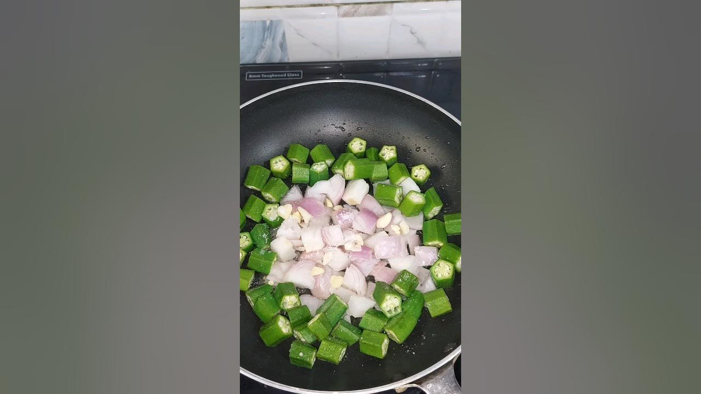

Kaanda Bhindi Sookha

Description
A dry bhindi recipe by Jaggu dada.
Ingredients
- 1 onion
- 200 gms ladies fingers
- 1 garlic clove
Steps
- Chop onions into cubes and soak them in water.
- Wash and chop bhindi into cubes.
- Heat oil in a non stick pan.
- Add onions and bindi and keep it covered for 15-20mins
- Add 1 garlic clove and salt to taste.